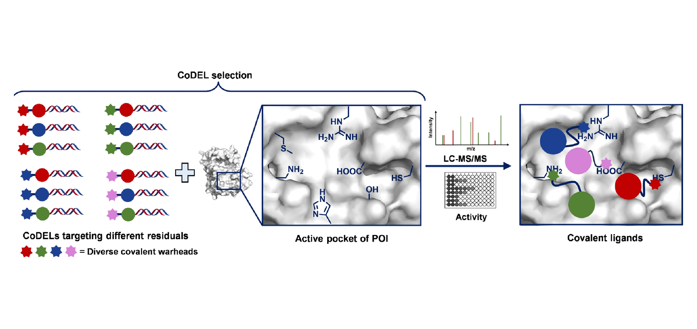
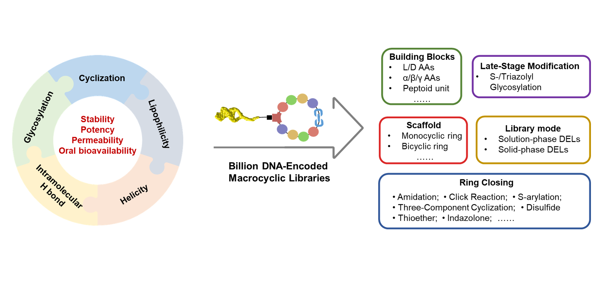
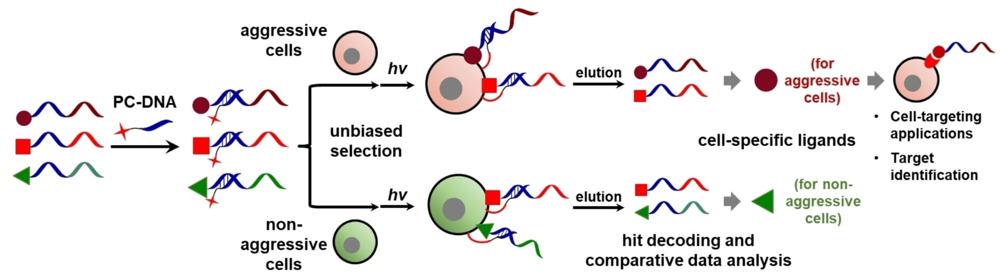

Research Interests
Our research focuses on challenging intracellular targets, orally active cyclic peptide therapeutics, and targeted delivery systems for small molecules and cyclic peptides. We combine covalent chemistry, peptide design, bifunctional modalities, and ligand discovery to develop drug candidates with improved selectivity, delivery, and therapeutic potential.

We develop cell-permeable covalent small molecules, cyclic peptides, and bifunctional modalities for challenging intracellular targets. By integrating chemical proteomics, activity-based protein profiling, and covalent ligand discovery, we aim to identify selective binders and functional modulators for biologically important proteins that are difficult to address with conventional approaches.
Our current efforts include the discovery of covalent inhibitors and the development of targeted protein-modulation strategies based on PROTACs, RIPTACs, and molecular glues.
Selected Publications

We design and synthesize cyclic peptides using diverse macrocyclization strategies, including thioether, disulfide, S-arylation, and three-component cyclization. These approaches enable the exploration of conformationally constrained peptides with improved affinity, selectivity, stability, and drug-like properties.
Our long-term goal is to develop orally active cyclic peptide therapeutics by integrating macrocycle design, medicinal chemistry, conformational control, permeability optimization, and in vivo evaluation.
Selected Publications

We discover and optimize targeting ligands that can selectively deliver small molecules and cyclic peptides to disease-relevant cells and tissues. Our research combines ligand discovery, chemical biology, and molecular design to improve tissue selectivity, cellular uptake, and therapeutic performance.
Current interests include targeted radiopharmaceutical delivery and the discovery of ligands for small-nucleic-acid delivery. These efforts are intended to establish adaptable molecular platforms for selective delivery and next-generation therapeutics.